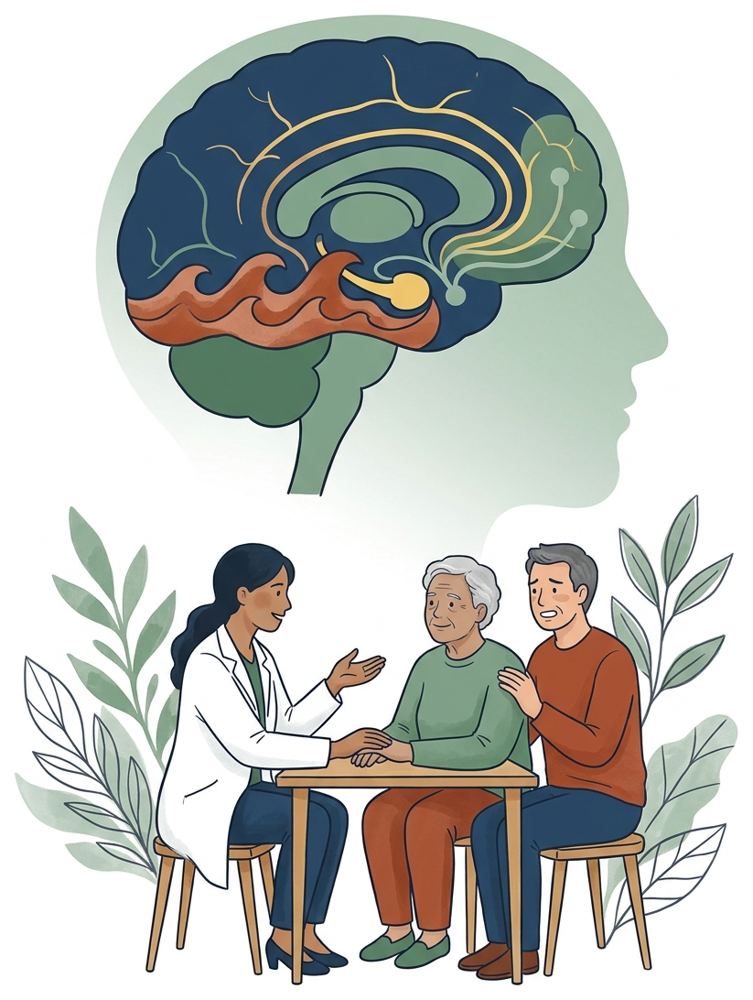

失智症精神行為症狀
藥物治療最新進展
從受體與神經迴路機轉、2026 台灣臨床決策指引，
到處方安全監測與務實減藥停藥原則
專科醫師臨床實證專題講座｜15 分鐘互動式簡報
整合 JAMA Neurol・NEJM・Nat Med・Lancet・2026 台灣共識
各位醫師同仁大家好，歡迎進入今天的主題講座：失智症精神行為症狀，也就是 BPSD 的藥物治療最新進展。
在臨床第一線，面對失智長者的激動攻擊、妄想幻覺、日落失眠或嚴重冷漠，我們需要一套從神經迴路機轉出發，涵蓋臨床選藥決策、安全監測注意事項，到減藥停藥原則的完整實戰指引。
接下來十五分鐘，我們將透過作用機轉圖與資訊圖表，完整串聯國際第三期樞紐試驗與二零二六年台灣專家共識的臨床精髓。
四大症狀群源自腦區與神經傳導失衡
逾 90% 失智患者病程中出現 BPSD；鎖定受損神經迴路才能精準選藥、打破照護惡性循環
BPSD 四大表型之腦區迴路與受體靶點圖譜
核心病理：Tau / Aβ / α-Syn 網路退化神經傳導：前額葉 GABA 煞車失靈；藍斑核退化致杏仁核 α1 受體代償高敏感、5-HT 流失。
🎯 靶向藥：Brexpiprazole・Citalopram・AXS-05
神經傳導：視覺皮質 5-HT2A 受體上調、紋狀體多巴胺高張、皮質毒蕈鹼 M1/M4 缺失。
🎯 靶向藥：Pimavanserin（5-HT2A）・KarXT（M1/M4）
神經傳導：視交叉上核（SCN）生物鐘瓦解，夜間食慾素（Orexin OX1R/OX2R）過度促醒。
🎯 靶向藥：Suvorexant（DORA，免除 BZD 譫妄跌倒）
神經傳導：前扣帶迴至腹側紋狀體多巴胺（DA）與正腎上腺素（NE）動機訊號低下。
🎯 靶向藥：Methylphenidate（SSRI 對此無效）
39.1 小時 / 週
激動患者之非正式照顧者每週平均投入近 40 小時照護（較無激動者多出 >20 小時／週監督時間），醫療成本翻倍。
病患症狀 ⇄ 照顧者耗竭高度連動
患者激動與妄想引發家屬失眠與情緒崩潰；家屬的高壓語氣又反過來刺激患者杏仁核，加速提早送入機構。
精準治療新典範
辨識個別症狀群背後的神經迴路，以受體靶向調節取代無差別化學鎮靜。
資料來源：Cummings JL et al., JAMA Neurol 2024;81(6):645–656 [PMID 38558015]；Cheng YC et al., JCMA 2026;89(2):99–111 [PMID 41527161]；Grossberg GT et al., CNS Drugs 2026 [PMID 41439450]
超過百分之九十的失智患者會出現 BPSD。二零二四年 Cummings 在 JAMA Neurology 指出，四大症狀群源自截然不同的腦區與神經傳導失衡。
第一，激動與攻擊盛行率達五到六成，源於前額葉煞車失靈，加上藍斑核退化後杏仁核 α1 受體代償性高敏感，使家屬每週耗費三十九點一小時照護。
第二，妄想與幻覺與視覺皮質 5-HT2A 受體上調及毒蕈鹼 M1、M4 缺失有關，是 Pimavanserin 與 KarXT 的靶點。
第三，日落失眠源於視交叉上核退化與食慾素夜間過度促醒；第四，冷漠症則是前扣帶迴至紋狀體的多巴胺動機迴路斷聯。
由於患者症狀與照顧者困擾呈零點五八高度正相關，唯有鎖定受損迴路精準選藥，才能打破雙向惡性循環。
傳統抗精神病藥面臨死亡風險黑框警語
180 天絕對死亡風險與每害一人數（NNH，數值越小致死風險越高；Maust 2015，N = 90,786）
各類藥物相較未用藥配對組之 180 天死亡風險增幅與 NNH
1. 腦血管事件（中風）：血小板聚集、姿勢性低血壓與脫水血栓（Risperidone / Olanzapine 風險尤高）。
2. 吸入性肺炎：D2 阻斷導致咽喉肌肉僵硬與吞嚥反射遲鈍，加上 H1 過度鎮靜。
3. 心源性猝死：心肌鉀離子通道（hERG）阻斷延長 QTc，誘發心室頻脈。
Risperidone 降為第二線有限推薦（RG-T 2）
雖具台灣衛福部適應症且療效明確（LoE A），但考量高齡失智患者之錐體外徑症狀（EPS）、中風與下肢水腫風險，共識將其降為 RG-T 2。
資料來源：Maust DT et al., JAMA Psychiatry 2015;72(5):438–445 [PMID 25786075]；Cheng YC et al., J Chin Med Assoc 2026;89(2):99–111 [PMID 41527161]
為什麼臨床指引對傳統抗精神病藥如此謹慎？這張圖來自 Maust 團隊在 JAMA Psychiatry 發表、超過九萬名高齡失智患者的配對研究。
美國 FDA 黑框警語指出，失智患者使用抗精神病藥後死亡率上升一點五到一點七倍。Haloperidol 一百八十天每害一人數 NNH 只有二十六；三大死因為腦中風、咽喉僵硬引起的吸入性肺炎，以及 QTc 延長心因性猝死。
臨床常用的 Risperidone，NNH 也高達二十七；Olanzapine 則是四十。
因此二零二六年台灣專家共識做出關鍵調整：儘管 Risperidone 有衛福部適應症與 A 級實證，但考量中風、錐體外徑症狀與下肢水腫風險，將它降為第二級有限推薦；Quetiapine 的 NNH 為五十，同列第二級。
相對地，抗憂鬱劑 NNH 為一百六十六。處方任何抗精神病藥前都必須嚴格把關。
臨床決策起點：ABCDE-STEP 結構化流程
2026 台灣專家共識（Cheng 2026 Table 2）：從病因排查、非藥物介入到安全處方與減藥時程
先排除譫妄與可逆誘因
篩檢疼痛、泌尿道／肺部感染、便秘、尿滯留、脫水、電解質異常；立即檢視並停用致激動藥物（抗膽鹼藥、BZD、多巴胺致效劑、類固醇）並矯正視聽力。
紀錄表型與緊急危害
以 CMAI 或 NPI-Q 量化基線分數；區分言語 vs 肢體、非攻擊 vs 攻擊表型；評估自傷傷人急迫性、跌倒風險與照顧者崩潰程度。
鎖定觸發點與環境調整
找出時段與環境誘因（如傍晚過度刺激、洗澡抗拒）；執行環境降噪、結構化活動、音樂／觸撫與家屬溝通教練。重度困擾時採「並行評估模式」。
僅於兩大條件下啟動用藥
(1) 非藥物處置無效，或 (2) 嚴重痛苦、立即危險或照護瓦解。須完成醫病共享決策（SDM），病歷載明目標與五大監測項（EPS、姿勢性低血壓、QTc、鎮靜、中風）。
低劑量起始、慢速滴定
遵循 Start low, go slow；避免多重用藥、優先選擇每日一次給藥；必查藥物交互作用（如 SSRI 併用抗血小板藥增加出血、QTc 延長藥物疊加）。
首月每週查、4 週判療效
S 第 1 個月每週檢視安全；T 足量滿 4 週無顯著療效即減停；E 穩定滿 3–6 個月探索減藥；P 預作復發防範與家屬再培訓。
資料來源：Cheng YC et al., J Chin Med Assoc 2026;89(2):99–111, Table 2 & Table 4 [PMID 41527161]
面對激動患者，臨床決策第一步怎麼走？二零二六年台灣失智症專家群在 JCMA 發表的共識，提出了實用的 ABCDE-STEP 流程。
首先是 A，先排除譫妄、疼痛、泌尿道感染、便秘或尿滯留，並優先停用抗膽鹼藥與苯二氮平類；接著是 B，以 CMAI 或 NPI-Q 量化基線嚴重度與跌倒風險。
再來是 C，落實非藥物環境調整。考量台灣門診量大且家屬常瀕臨崩潰，共識允許重度高風險個案採「非藥物與藥物並行評估模式」。
進入 D 與 E，僅在非藥物無效或有危害時用藥，完成共享決策，低劑量起始、慢速滴定，並留意交互作用。
最後是 STEP 時程：首月每週查安全，足量滿四週無效即停藥；穩定三到六個月後主動評估減藥。
Brexpiprazole 精準調控三大單胺受體
血清素－多巴胺活性調節劑（SDAM）：次奈米莫耳親和力修復前額葉煞車、降溫杏仁核油門
1. 血清素軸：5-HT1A 部分致效（Ki = 0.12 nM）＋ 5-HT2A 拮抗（0.47 nM）
強化前額葉皮質下行抑制訊號、緩解焦慮與衝動，同時減少深層睡眠破壞與錐體外徑副作用。
2. 多巴胺軸：D2（Ki = 0.30 nM）/ D3 部分致效（適度內在活性）
內在活性低於 Aripiprazole：在多巴胺過高之邊緣區發揮功能性拮抗，在黑質紋狀體維持基礎多巴胺張力，大幅降低靜坐不能與 EPS。
3. 正腎上腺素軸：α1B（Ki = 0.17 nM）/ α2C 強效拮抗
直接阻斷失智大腦因藍斑核（LC）退化而代償性高敏感的杏仁核 α1B 受體，精準平息暴怒與肢體攻擊。
4. 低組織胺 H1（Ki = 19 nM）與極低毒蕈鹼 M1（>1,000 nM）親和力
非鎮靜性控制激動（嗜睡僅 3.7%），完全避開抗膽鹼作用，不加速認知退化（12–24 週 MMSE 維持穩定）。
前額葉－杏仁核神經迴路與突觸靶點機制圖
• 失智病理：額葉退化使對邊緣系統之 GABA 下行抑制減弱。
• 藥物作用：5-HT1A 部分致效 ＋ α2C 拮抗 → 恢復額葉執行調控。
• 失智病理：藍斑核流失 → 杏仁核 α1 受體代償上調，微幅刺激即引爆攻擊。
• 藥物作用：α1B 強效拮抗 ＋ D2/D3 部分致效 ＋ 5-HT2A 拮抗 → 穩定情緒且低 EPS。
臨床表型轉化：非鎮靜性緩解三大 CMAI 激動行為因子
肢體攻擊（F1 ↓）＋ 漫遊抗拒（F2 ↓）＋ 言語咆哮（F3 ↓）｜不傷認知（MMSE 穩定）
資料來源：Lee D et al., JAMA Neurol 2023 [PMID 37930669]；Cummings JL et al., JAMA Neurol 2024 [PMID 38558015]；Smoller R et al., Drugs 2025 [PMID 40913683]
接著看首個獲美國 FDA 與台灣衛福部核准用於阿茲海默症激動的 Brexpiprazole，它的受體機轉如何突破傳統藥物的瓶頸？
首先在血清素軸，它對 5-HT1A 具零點一二奈米莫耳高親和力部分致效，並拮抗 5-HT2A，能修復前額葉皮質的下行抑制煞車。
第二，在多巴胺軸，它是 D2 與 D3 部分致效劑，內在活性比 Aripiprazole 更溫和，在抑制邊緣系統多巴胺過高的同時，大幅降低靜坐不能與錐體外徑副作用。
第三點最關鍵：失智患者藍斑核退化會讓杏仁核 α1B 受體代償性高敏感，微幅刺激就引爆攻擊；Brexpiprazole 具零點一七奈米莫耳 α1B 強效拮抗，直接為杏仁核降溫。
加上對 H1 與毒蕈鹼 M1 親和力極低，能非鎮靜性緩解三大激動行為，且不傷認知。
四大樞紐試驗確立二至三毫克有效劑量
國際三項第三期 RCT（Grossberg 2020、Lee 2023）與日本 Phase 2/3（Nakamura 2024）完整證據鏈
| 臨床試驗（第一作者・年份） | 樣本數與療程 | 目標劑量組別 | 主要終點 CMAI 組間差（LSMD） | p 值與效果量（Cohen's d） | 臨床劑量決策啟示 |
|---|---|---|---|---|---|
| Trial 283（Grossberg 2020） | N = 433（12 週） | 固定 2 mg/d vs 1 mg/d | 2 mg：−3.77（1 mg：+0.23） | 2 mg p = 0.040（d = 0.25）；1 mg p = 0.90 | 1 mg/d 無效，確立最低有效劑量為 2 mg/d |
| Trial 284（Grossberg 2020） | N = 270（12 週） | 彈性 0.5–2 mg/d | 達 2 mg 亞群：−5.06（整體 −2.34） | 2 mg 亞群 p = 0.012（d = 0.41） | 未滴定至 2 mg 則療效不足，促成後續試驗設計 |
| Trial 213（Lee 2023 JAMA Neurol） | N = 345（12 週） | 固定 2 或 3 mg/d | −5.32（−22.6 vs −17.3） | p = 0.003（d = 0.35）；CGI-S p = 0.008 | 促成美國 FDA 與台灣衛福部正式核准適應症 |
| 日本 Phase 2/3（Nakamura 2024） | N = 410（10 週） | 固定 2 mg/d vs 1 mg/d | 2 mg：−7.2｜1 mg：−3.7 | 2 mg p < 0.0001；1 mg p = 0.0175 | 亞洲高齡低體重族群第 4 週即顯著分開 |
LSMD −4.50
95% CI −6.90 至 −2.10（p < 0.001，d = 0.30）；29 項 CMAI 行為中 19 項優於安慰劑。
−1.56 分
p < 0.001（d = 0.27）：顯著減少推打、抓咬、踢人、摔物與咒罵威脅。
−1.16 / −1.23
身體非攻擊漫遊焦躁 −1.16（p = 0.012）；言語激動重複咆哮 −1.23（p < 0.001）。
LSMD −9.18
激動合併幻覺／妄想者效果量達 d = 0.52（p = 0.004）；無精神病者亦顯著（−4.22，p = 0.002）。
資料來源：Grossberg 2020 AJGP [PMID 31708380]；Lee 2023 JAMA Neurol [PMID 37930669]；Cummings 2026 Alzheimers Dement [PMID 41591746]；Nakamura 2024 [PMID 39369280]；Tariot 2026 [PMID 42052145]
臨床上 Brexpiprazole 要開幾毫克才有效？我們看四項第三期樞紐試驗數據。
在 Grossberg 二零二零年兩項試驗中，Trial 283 固定兩毫克組顯著降低 CMAI 三點七七分，但一毫克組無效；Trial 284 彈性劑量也只有滴定到兩毫克的亞群顯著改善五點零六分。因此零點五與一毫克只是爬坡，目標須達兩毫克。
Trial 213 鎖定二到三毫克，第十二週 CMAI 改善五點三二分，促成美台核准。
日本四百一十人試驗中，兩毫克組第十週更降低 CMAI 達七點二分，第四週即顯著分開。
二零二六年 Cummings 統合證實二到三毫克能同步改善肢體攻擊、非攻擊漫遊與言語咆哮三大因子；Tariot 分析更顯示合併妄想幻覺時 CMAI 降幅高達九點一八分。
第四週起同步減輕症狀與照顧者困擾
國際（N = 610）與日本（N = 410）第三期研究：驗證第 4 週為臨床初步療效與家屬減壓檢核點
Trial 283 + 213（N = 610，12 週，2–3 mg/d）
NPI 精神行為症狀總分差
−3.31
95% CI −5.24 至 −1.39｜p < 0.001
NPI 照顧者困擾總分差（NPI-D）
−1.62
95% CI −2.55 至 −0.70｜p < 0.001
- 第 4 週即顯著分開：照顧者困擾於第 4 週即優於安慰劑（p = 0.008），呼應台灣共識「足量 4 週評估療效」之時程設計。
- 高度連動（Pearson r = 0.58）：患者激動／攻擊單項困擾顯著下降（LSMD −0.41，p < 0.001），同步改善家屬睡眠與情緒負荷。
亞洲高齡族群（N = 410，10 週，2 mg/d 組）
NPI 精神行為症狀總分差
−8.4
SMD = 0.485｜p < 0.0001
NPI 照顧者困擾總分差（NPI-D）
−3.9
95% CI −5.6 至 −2.3｜p < 0.0001
- 中大型效果量（SMD = 0.539）：平均年齡 80.1 歲之亞洲失智患者，10 週即展現顯著家屬減壓效益。
- 核心困擾全面改善：激動／攻擊困擾（−0.8，p = 0.0002）、易怒困擾（−0.8，p < 0.0001）與夜間行為困擾同步下降。
資料來源：Grossberg GT et al., CNS Drugs 2026 [PMID 41439450]；Nakamura Y et al., Int J Geriatr Psychiatry 2025;40(7):e70134 [PMID 40717666]
門診家屬最常問：「這顆藥吃多久才會見效？」這兩項大型研究提供了具體的衛教依據。
二零二六年 Grossberg 國際六百一十人統合分析顯示，Brexpiprazole 二到三毫克在第十二週讓 NPI 症狀總分比安慰劑多降三點三一分，照顧者困擾總分也顯著降低一點六二分。
關鍵時間點在「第四週」：前兩週安全爬坡、第三週達兩毫克後，第四週起照顧者困擾即顯著優於安慰劑，印證台灣共識「足量四週評估療效」的建議。
日本四百一十人試驗中，兩毫克組第十週更讓照顧者困擾降低三點九分，效果量零點五三九。
預先告知家屬「前兩週爬坡、第四週減壓」，能大幅提升服藥順從性。
抗憂鬱劑分水嶺與光學異構物機轉解析
為何 Citalopram 有效而 Escitalopram 失敗？三大里程碑 RCT（CitAD・S-CitAD 2025・SYMBAD）對決
Citalopram（R+S 消旋體）
N = 186｜9 週｜目標 30 mg/d + 心理社會介入
✔ 臨床顯著改善：40% vs 26%（p = 0.007）
NBRS-A −0.93（p = 0.04）｜CMAI −2.38（p = 0.008）
機轉優勢：R-鏡像異構物可能透過抗組織胺與調節 SERT 構型發揮獨特抗激動作用（且 R-體血中濃度較高的亞群療效更佳）。
⚠ 注意事項：QTc 延長 +18.1 ms（p = 0.004）、MMSE −1.05 分 → 60 歲以上每日上限 20 mg！
Escitalopram（純 S-異構物）
N = 392 納入 → 173 名非藥物無效者隨機分派｜12 週 15 mg/d
✘ 主要終點失敗：34.5% vs 27.0%（NS）
風險差 −0.08（95% CI −0.21 至 0.06），無統計顯著差異
機轉啟示：單純 S-citalopram 高選擇性抑制 SERT 無法複製消旋體 Citalopram 的抗激動效果，打破過去「立普能可完全取代喜普妙」的假設。
⚠ 副作用仍增加：第 12 週 QTcB 仍延長 +10.8 ms（p = 0.003）、腹瀉 10.7% vs 2.2%、跌倒 14.3% vs 5.6%。
Mirtazapine（NaSSA 類）
N = 204｜12 週｜最高 45 mg/d vs 安慰劑
✘ 完全無效：CMAI 差 −1.74（p = 0.530）
Zarit 照顧者負荷於第 12 週反而惡化 +5.01 分（p = 0.020）
機轉陷阱：阻斷突觸前 α2 自體受體雖促進正腎上腺素釋放，但在藍斑核退化、杏仁核 α1 高敏感之失智大腦反而無法平息激動，徒增 H1 日間嗜睡。
🚫 台灣 2026 共識列為 RG-T 4（不建議）：第 16 週死亡 7 例 vs 安慰劑 1 例（p = 0.065）。
資料來源：Porsteinsson 2014 JAMA [PMID 24549548]；Rajji 2025 Nat Med [PMID 40133524]；Banerjee 2021 Lancet [PMID 34688369]；Cheng 2026 JCMA [PMID 41527161]
當患者中風風險高、想優先選用抗憂鬱劑治療激動時，三項里程碑試驗徹底改寫了臨床決策。
首先是二零一四年 JAMA 的 CitAD 試驗：消旋體 Citalopram 三十毫克顯著改善激動，反應率百分之四十比二十六；但因延長 QTc 十八點一毫秒，六十歲以上每日上限須控制在二十毫克。
許多醫師改開純 S 異構物的 Escitalopram。然而二零二五年 Nature Medicine 的 S-CitAD 第三期試驗卻證實，Escitalopram 十五毫克反應率與安慰劑無統計差異，原因是少了 R 異構物的協同機轉，卻仍使 QTcB 延長十點八毫秒並增加跌倒。
至於常在睡前開立的 Mirtazapine，Lancet 的 SYMBAD 試驗已證實對激動完全無效，反而惡化照顧者負荷。
因此二零二六台灣共識將 Mirtazapine 列為第四級不建議使用；選用抗憂鬱劑應選 Citalopram 十到二十毫克或 Agomelatine 十二點五毫克。
激動新管線：麩胺酸調控與急性舌下給藥
跳脫單胺受體框架：AXS-05（口服維持與防復發）與 BXCL501（2 小時非注射急性救援）雙機轉圖解
雙成分藥動與藥效協同機制圖
1. 強效抑制 CYP2D6，阻斷 DXM 快速代謝為 DXO。
2. 提升 DXM 中樞生體可用率。
3. 兼顧 NE / DA 再吸收抑制。
• NMDA 非競爭性拮抗：平抑皮質麩胺酸興奮毒性。
• Sigma-1（σ1）致效：調節鈣離子與突觸可塑性。
• SERT / NET 調節 → 無 D2 阻斷、不傷認知。
• ADVANCE-1（N = 366，5 週）：CMAI 降幅 −15.4 vs Bupropion −10.0（p < 0.001）與安慰劑 −11.5（p = 0.010）。
• ACCORD-1（N = 108 隨機撤藥）：延緩復發 HR = 0.275（p = 0.014，風險降 3.6 倍），復發率 7.5% vs 25.9%（ACCORD-2 亦達標 p = 0.001；ADVANCE-2 數值改善未達統計顯著）。
藍斑核突觸前 α2 受體負回饋降溫機制圖
1. 繞過肝臟首渡效應，快速起效。
2. 免除肌肉注射疼痛與肢體約束。
3. 半衰期短（2–3 小時），適合 PRN 救援。
• 致效突觸前 α2A/2B/2C 自體受體。
• 啟動負回饋煞車 → 攔截正腎上腺素（NE）風暴。
• 產生「可喚醒之平靜狀態」，零肌張力不全。
• TRANQUILITY II 第三期試驗（N = 149）：60 µg 舌下薄膜給藥後 2 小時 PEC 激動總分顯著下降 −7.5 vs 安慰劑 −5.4（p = 0.0112），第 1 小時即開始起效。
• 監測注意事項：嗜睡 16%（多為輕度）、低血壓 12%、心搏過緩 4% → 給藥後須監測血壓與脈搏。
資料來源：Imbimbo BP et al., CNS Drugs 2025;39(2):143–169, Table 1 & Table 2 [PMID 39623197]；Smoller R et al., Drugs 2025, Table 1 [PMID 40913683]
治療阿茲海默症激動還有兩條跳脫多巴胺框架的第三期新管線，分別解決「慢性防復發」與「急性救援」。
左方是獲 FDA 突破性療法的口服複方 AXS-05，以 Bupropion 抑制肝臟 CYP2D6，讓右美沙芬在中樞達到高濃度，發揮拮抗 NMDA 麩胺酸受體與致效 Sigma-1 受體的協同作用。
在 ADVANCE-1 試驗中，AXS-05 五週顯著降低 CMAI 十五點四分；在隨機撤藥試驗 ACCORD-1 中，更將激動復發風險降低三點六倍，復發率僅百分之七點五比二十五點九。
右方則是急性舌下薄膜 Dexmedetomidine，代號 BXCL501。它繞過首渡效應，致效藍斑核突觸前 α2 自體受體，啟動負回饋攔截正腎上腺素風暴。
TRANQUILITY II 證實六十微克舌下含服兩小時即顯著降低急性激動，帶來可喚醒的平靜狀態，但需注意百分之十二的低血壓與心搏過緩。
失智症精神病邁向非多巴胺受體新世代
告別 D2 阻斷誘發之嚴重巴金森惡化：Pimavanserin（皮質 5-HT2A）與 KarXT（中樞 M1/M4 致效＋周邊保護罩）
Pimavanserin：選擇性 5-HT2A 反向致效劑
作用機轉：專一結合視覺與額葉皮質過度活化的 5-HT2A 受體（反向致效），對多巴胺 D2、組織胺 H1 與毒蕈鹼 M1 受體親和力為零。
雙盲撤藥期復發率（N = 217）
13% vs 28%
HR = 0.35（p = 0.005，提前達標）
38 週全程認知與運動安全
零惡化
MMSE +1.2 分｜ESRS-A −0.9 分
• 臨床定位與注意事項：開放期 12 週達 61.8% 持續反應（SAPS-H+D 降 75.2%）。因療效於帕金森氏病失智（PDD）與路易氏體失智（DLB）最顯著，是合併運動障礙者之首選機轉；惟須注意 QTcF 平均延長 +5.4 ms（次世代無 QTc 疑慮之 ACP-204 正進行第三期試驗）。
「中樞毒蕈鹼致效 ＋ 周邊抗膽鹼保護罩」機制圖
Xanomeline（M1/M4 致效劑）
• 皮質 M1 活化 → 強化 GABA 抑制麩胺酸。
• 紋狀體 M4 活化 → 調降多巴胺，不碰 D2 受體！
障壁
BBB
Trospium（四級銨鹽）
• 高極性無法穿透血腦障壁入腦。
• 阻斷腸胃 M 受體 → 抵銷噁心嘔吐與流涎。
• 臨床驗證與 ADEPT 計畫：1997 年 Bodick 二期試驗即證實 Xanomeline 改善 AD 妄想幻覺與激動，當時因腸胃副作用擱置；加入 Trospium 後於 2024 年獲 FDA 核准（Cobenfy），目前正進行阿茲海默症精神病第三期 ADEPT-1（N = 380）與 ADEPT-2（N = 400）。
資料來源：Tariot PN et al., N Engl J Med 2021;385(4):309–319 [PMID 34289275]；Imbimbo BP et al., CNS Drugs 2025 [PMID 39623197]；Kaul I et al., Lancet 2024 [PMID 38104575]
當失智患者出現被偷妄想或視幻覺，特別是路易氏體或帕金森失智，傳統 D2 阻斷劑極易引發嚴重僵硬跌倒。現在有兩大非 D2 新典範。
左方是 NEJM 發表的 HARMONY 第三期試驗：Pimavanserin 專一反向致效皮質 5-HT2A 受體，零 D2 親和力。開放期逾六成患者持續緩解；雙盲撤藥期復發率僅百分之十三比二十八，風險比零點三五，且三十八週完全不傷認知與運動功能。
因其在帕金森失智療效最顯著，且有五點四毫秒 QTcF 延長，無 QTc 疑慮的次世代 ACP-204 正進行三期試驗。
右方是全新機轉 KarXT：結合穿過血腦障壁致效中樞 M1、M4 受體的 Xanomeline，以及不過血腦障壁的四級銨鹽 Trospium 當周邊保護罩，抵銷腸胃嘔吐副作用。
KarXT 已於二零二四年獲 FDA 核准，目前阿茲海默症精神病第三期 ADEPT-1 與 ADEPT-2 正全面推進。
睡眠覺醒障礙與冷漠症的靶向機轉突破
失眠不靠 BZD 強行鎮靜（Suvorexant 雙重食慾素拮抗）；冷漠不靠 SSRI（Methylphenidate 活化動機迴路）
Suvorexant：雙重食慾素受體拮抗劑（DORA）
全腦 GABAA 強行鎮靜 → 誘發夜間譫妄、反彈日落激動與跌倒骨折，破壞睡眠結構。
可逆阻斷下視丘 OX1R / OX2R 促醒訊號 → 保留生理睡眠結構，隔日 MMSE 零惡化。
總睡眠時間（TST）組間淨增加
+28.2 分鐘
+73.4 vs +45.2 分（p = 0.001）
入睡後清醒（WASO）組間減少
−15.7 分鐘
後半夜改善最顯著（p = 0.014）
臨床價值：睡眠增加 ≥50 分鐘比例達 62% vs 45%（OR = 2.2，p = 0.002），嗜睡僅 4.2%，已正式寫入美國 FDA 仿單。
Methylphenidate：重啟前額葉－紋狀體動機迴路
病灶為 ACC－紋狀體多巴胺斷聯；誤開 SSRI 完全無效且常加重冷漠。
阻斷 DAT / NET 提升突觸間隙 DA / NE 動機訊號；6 個月未誘發激動或妄想。
6 個月 NPI 冷漠分數組間差
−1.25 分
p = 0.002（Cohen's d = 0.415）
達成冷漠完全緩解（NPI = 0）
HR = 2.16
95% CI 1.19–3.91（p = 0.01）
注意事項：前 100 天起效最快；用藥期間須定期量測體重與血壓（體重減輕 >7% 比例為 10% vs 安慰劑 6%）。
資料來源：Herring WJ et al., Alzheimers Dement 2020;16(3):541–551 [PMID 31944580]；Mintzer J et al., JAMA Neurol 2021;78(11):1324–1332 [PMID 34570180]
失智長者最常讓家屬精疲力竭的還有半夜不睡與白天嚴重冷漠，這兩者同樣有第三期靶向藥物突破。
左方是失眠與日落症候群：傳統苯二氮平類全腦抑制極易誘發譫妄與跌倒；雙重食慾素受體拮抗劑 Suvorexant 則是精準關閉下視丘過度活化的促醒開關。
在兩百八十五名阿茲海默症失眠患者的睡眠檢查試驗中，Suvorexant 十到二十毫克讓總睡眠時間淨增加二十八點二分鐘，後半夜清醒減少十五點七分鐘，且隔天早上 MMSE 零惡化。
右方是冷漠症：源於前扣帶迴與紋狀體多巴胺斷聯，誤開 SSRI 反而會加重冷漠。
JAMA Neurology 發表的 ADMET 2 試驗顯示，每日兩次十毫克 Methylphenidate 顯著降低 NPI 冷漠分數一點二五分，完全緩解率提升二點一六倍，不誘發激動妄想，只需追蹤血壓與體重。
台灣共識推薦等級與七大安全面向評比
2026 台灣專家共識（Cheng 2026 Table 3 & Fig 1）：整合實證等級（LoE）、衛福部適應症與五大安全面向
| 推薦分級（RG-T） | 藥物名稱 | 實證（LoE） | 衛福部核准 | 成人建議每日劑量 | 五大安全面向與臨床決策定位（Cheng 2026 Fig 1） |
|---|---|---|---|---|---|
| RG-T 1（強烈推薦） | Brexpiprazole | A | ✔ 正式核准 | 1–3 mg/d（目標 2–3 mg） | 首選藥物：療效與耐受性最佳平衡；低 EPS、低鎮靜、低跌倒、低中風風險 |
| RG-T 1（強烈推薦） | Aripiprazole | A | 適應症外 | 2–10 mg/d | 療效相當於 Risperidone，低鎮靜與低代謝／中風風險；需共享決策並留意靜坐不能 |
| RG-T 1（強烈推薦） | Citalopram / Agomelatine | B | 適應症外 | Cit 10–20 mg｜Ago 12.5 mg | 安全優先首選：中風或巴金森高危不想用抗精神病藥時之首選（避開 Escitalopram） |
| RG-T 2（有限推薦） | Risperidone | A | ✔ 正式核准 | 0.25–1 mg BID | 療效強（LoE A），但因 EPS、腦中風與下肢水腫風險較高，共識降為第二線 |
| RG-T 2（有限推薦） | Quetiapine | C1 | 適應症外 | 25–400 mg/d（常 12.5–100） | RCT 療效不一致，但因低 EPS 與低中風風險，於虛弱或巴金森共病者升級為 RG-T 2 |
| RG-T 3（微弱推薦） | Olanzapine / Haloperidol / 抗癲癇藥 / Trazodone | C1–C3 | Haloperidol ✔ | Olz 2.5–5 mg｜Hal 0.5–2 mg IM | Haloperidol 僅限急性緊急肌注；Carbamazepine 難治型可用但台灣必先驗 HLA-B*1502 |
| RG-T 4（不建議） | Mirtazapine / Oxcarbazepine | D | 無 | 不建議用於失智症激動 | SYMBAD 與臨床試驗證明無效且增加負面風險，常規不建議開立 |
資料來源：Cheng YC et al., J Chin Med Assoc 2026;89(2):99–111, Table 1, Table 3 & Fig 1 [PMID 41527161]
匯總所有實證，二零二六年台灣專家共識依證據等級、安全性與衛福部適應症，將激動用藥分為四級。
第一級強烈推薦包含四種藥：首選是具 A 級實證與衛福部適應症的 Brexpiprazole，在錐體外徑、鎮靜、跌倒、代謝與中風五大安全面向最均衡；Aripiprazole 同列第一級，但屬適應症外使用。
若患者腦血管風險高、優先考量非抗精神病藥，第一級推薦還有 Citalopram 十到二十毫克與 Agomelatine 十二點五毫克。
第二級有限推薦呈現重要對比：Risperidone 雖有 A 級實證與適應症，但因中風與 EPS 風險降為第二級；Quetiapine 雖僅 C1 證據，卻因低 EPS 與低中風風險升級為第二級。
第三級僅限難治情境，如用 Carbamazepine 前必驗 HLA-B 1502；Mirtazapine 則列第四級不建議使用。
四大失智亞型與臨床表型個體化選藥指引
點選上方失智亞型分頁切換臨床決策樹（Cheng 2026 §3.4）：不同病理亞型有截然不同的首選與禁忌
依「症狀嚴重度 × 心血管／QTc 共病」雙軸分流決策
中重度激動／合併妄想幻覺
首選：Brexpiprazole（1–3 mg/d，RG-T 1）或 Aripiprazole（2–10 mg/d）。Tariot 2026 證實合併精神病亞群 CMAI 降幅達 −9.18（d = 0.52）。
輕中度激動／高腦血管風險
首選：Citalopram（10–20 mg/d，RG-T 1）或 Agomelatine（12.5 mg/d，RG-T 1）。開立 Citalopram 前必驗基線 ECG QTc 與血鈉。
合併失眠日落或單純重度冷漠
失眠：Suvorexant 10–20 mg 睡前（延長睡眠 +28.2 分鐘）。
冷漠：Methylphenidate 5–10 mg BID（ADMET 2）。
⚠ 避免事項：AChEI 與 Memantine 對已發作之急性激動療效有限（RG-T 3），不作為急性抗激動單一處方。
最高警戒：高達 50% 對強效 D2 阻斷產生嚴重錐體外徑與自主神經崩潰
🚫 絕對與相對禁忌
嚴禁 Haloperidol 與高劑量 Risperidone / Olanzapine（易誘發急性運動不能危機、惡性症候群與重度嗜睡跌倒）。
✔ 基礎首選：膽鹼酯酶抑制劑
DLB/PDD 具嚴重皮質乙醯膽鹼缺失，Rivastigmine 或 Donepezil 對視幻覺與認知波動具廣泛改善效益，應優先用足。
✔ 必要時之抗精神病／激動藥
精神病首選 Pimavanserin（HARMONY HR 0.35，零 D2 阻斷）；激動首選極低劑量 Quetiapine（12.5–50 mg），D2 部分致效劑須極低劑量審慎監測。
💡 監測重點：起始劑量減半，密切追蹤帕金森步態、姿勢性低血壓、意識混亂與 QTc 間期。
去抑制（Disinhibition）、衝動、強迫行為與甜食渴求之靶向處置
✔ 第一線首選：SSRIs
FTD 額葉突觸血清素顯著流失，Citalopram（10–20 mg/d）或 Sertraline（50–100 mg/d）能有效減少易怒、衝動脫序與強迫重複行為。
✔ 第二線選擇：Trazodone
交叉 RCT 證實 Trazodone（150–300 mg/d）能顯著改善 FTD 之激動、暴食與負向抗拒行為（須注意鎮靜與姿勢性低血壓）。
⚠ 避開 AChEI 與常規抗精神病藥
膽鹼酯酶抑制劑（Donepezil 等）可能加重 FTD 激動與焦躁；FTD 亦對 D2 阻斷敏感，抗精神病藥僅限嚴重危險時最低劑量短期使用。
💡 臨床要訣：遇到早發性失智合併脫序行為，先補血清素（SSRI / Trazodone），切勿直接給予膽鹼酯酶抑制劑。
基線已有腦白質病變、腔隙性梗塞或微出血，中風防範為第一優先
🚫 避開高腦血管風險藥物
網路統合分析顯示 Risperidone 與 Olanzapine 之腦血管不良事件（CVA）風險較高，於血管性失智患者應盡量避免。
✔ 優先選擇：SSRI 或低中風風險藥
優先選用 Citalopram / Sertraline（但併用抗血小板藥時須監測胃腸道出血）或腦血管風險較低之 Brexpiprazole / Aripiprazole / Quetiapine。
✔ 血壓與早期減藥管理
嚴密監測姿勢性低血壓與腦灌流不足；症狀穩定後應盡早啟動階梯減藥（Tapering），減少長期血管暴露。
💡 藥物交互作用提醒：VaD 患者常服用 Aspirin 或 Clopidogrel，併用 SSRI 時可考慮搭配胃黏膜保護劑或 PPI。
資料來源：Cheng YC et al., J Chin Med Assoc 2026;89(2):99–111, §3.4 Subtype-specific considerations [PMID 41527161]；Tariot PN et al., NEJM 2021 [PMID 34289275]
門診臨床決策不能只看症狀，還必須看「失智症亞型」。我們透過上方分頁掌握四大亞型選藥指引。
第一，阿茲海默症：中重度激動或合併妄想幻覺首選 Brexpiprazole 或 Aripiprazole；輕中度或高血管風險則選 Citalopram 或 Agomelatine。
第二，路易氏體與帕金森失智：對 D2 阻斷極度敏感，嚴禁 Haloperidol。基礎先用足膽鹼酯酶抑制劑；精神病首選 Pimavanserin 或極低劑量 Quetiapine。
第三，額顳葉失智症：核心為額葉血清素缺失，首選 SSRI 或 Trazodone；切忌加量膽鹼酯酶抑制劑，否則反會加重焦躁。
第四，血管性失智：應避開中風風險較高的 Risperidone 與 Olanzapine；併用 SSRI 與抗血小板藥時須防胃腸出血。
處方執行注意事項與前十二週黃金監測窗
統合 N = 1,043 安全性時間窗分析（Shah 2025、Porsteinsson 2026）與主力藥物處方必檢清單
不良事件發生時間點與持續天數圖解（N = 1,043）
• 首次 TEAE 中位發生日：第 32 天（安慰劑 28 天）。
• TEAE 中位持續天數：僅 6 天（多輕中度短暫）。
• 唯一 ≥5% 為頭痛（7.6% vs 9.3%）；嗜睡 3.7%、EPS 5.3%。
• 前 12 週無副作用者，後續極少新發 AESI！
• 腦血管事件 CVA 0.5% vs 0.3%（與安慰劑相當）。
• 第 12 與 24 週 MMSE 維持穩定（+0.2 / −0.3）。
標準滴定：第 1–7 天 0.5 mg/d ➔ 第 8–14 天 1 mg/d ➔ 第 15 天起 2 mg/d（視反應最高 3 mg/d）
死亡率透明揭露：12 週雙盲期死亡率 Brexpiprazole 0.9%（6/655）vs 安慰劑 0.3%（1/388），雖試驗主持人皆判定與藥物無關，仍須依黑框警語向家屬完整說明。
1. Brexpiprazole 代謝與劑量調整注意事項
經肝臟 CYP2D6 與 CYP3A4 代謝：若併用強效 CYP2D6 抑制劑（如 Paroxetine、Fluoxetine、Bupropion）或強效 CYP3A4 抑制劑（Clarithromycin），或中重度肝腎功能不全，目標劑量應減半。
2. Citalopram / SSRI 三大安全紅線（QTc・低血鈉・出血）
• 60 歲以上每日上限 20 mg；基線與增量後必查 ECG（QTc > 450–470 ms 避免使用）。
• 用藥第 2–4 週必查血鈉（防 SIADH 低血鈉致跌倒譫妄）；併用 Aspirin / NSAID / 抗凝血劑須防胃腸出血。
3. Risperidone 與抗癲癇藥特殊注意事項（台灣在地規範）
• Risperidone：除監測 EPS 與腦中風外，台灣共識特別提醒追蹤下肢水腫（Lower-extremity edema），出現時應減量或停藥。
• Carbamazepine：啟動前強制檢驗 HLA-B*1502 基因型（防 SJS/TEN），並留意酵素誘導降低他藥濃度。
資料來源：Shah A et al., Am J Geriatr Psychiatry 2025 [PMID 40681915]；Porsteinsson AP et al., CNS Spectr 2026 [PMID 41961243]；Cheng YC et al., JCMA 2026 [PMID 41527161]
決定處方後，安全監測有哪些必守注意事項？左方是 Shah 與 Porsteinsson 針對一千零四十三名患者的統合安全性分析。
Brexpiprazole 首次不良事件中位發生在第三十二天，中位持續僅六天；關鍵發現是：若前十二週無副作用，後續十二到二十四週延伸期也極少新發不良事件。因此「前十二週」就是黃金監測窗。
劑量須依零點五、一、兩毫克逐週慢速滴定；若併用 Fluoxetine 或 Paroxetine 等強效 CYP2D6 抑制劑，劑量須減半。十二週雙盲期死亡率百分之零點九比零點三，應向家屬透明說明。
開立 Citalopram 必守三大紅線：六十歲以上上限二十毫克、監測 QTc，以及用藥二到四週驗血鈉防低血鈉跌倒。
台灣共識也提醒用 Risperidone 需檢查下肢水腫；用 Carbamazepine 前必先檢驗 HLA-B 1502 基因型。
臨床情境：合併心電圖異常時如何選藥
點選右側四個處方選項檢視最新實證解析（自動播放模式將依序揭曉）
78 歲男性｜中度阿茲海默症（MMSE 15 分）
過去兩個月每逢傍晚即抗拒洗澡、咆哮並推打外籍看護（CMAI 68 分）。已執行 3 週結構化非藥物環境調整與音樂減壓，但攻擊行為仍每週發作 4–5 次。
處方挑戰：感染、疼痛與電解質異常皆已排除（完成 ABC 步驟）。此時進入 D（Decision to medicate），哪一項處方最符合 2025–2026 實證？
資料來源：Rajji TK et al., Nat Med 2025 [PMID 40133524]；Banerjee S et al., Lancet 2021 [PMID 34688369]；Cheng YC et al., JCMA 2026 [PMID 41527161]
我們用門診案例演練臨床決策：七十八歲中度阿茲海默症伯伯，傍晚抗拒洗澡並推打看護，三週非藥物介入無效。
檢查發現兩大線索：心電圖 QTc 延長到四百六十八毫秒，且有輕微小碎步與齒輪樣僵硬。這時該選哪種藥？
先看選項 A：S-CitAD 試驗已證實 Escitalopram 對激動無效，且仍延長 QTc 十點八毫秒，對伯伯並不安全。
再看選項 B 與 C：Mirtazapine 在 SYMBAD 試驗無效且增加照顧者負荷，列為 RG-T 4 不建議；Risperidone 或 Haloperidol 則會惡化巴金森步態導致跌倒。
因此選項 D 最合適：選用第一級推薦的 Brexpiprazole，從零點五毫克慢速滴定到兩毫克，不延長 QTc 且低 EPS，滿四週評估療效。
減藥與停藥原則：四大時間點與實務策略
2026 台灣專家共識（Cheng 2026 Table 2 & Table 4）：何時必須停藥？如何階梯式減量而不引發反彈復發？
BPSD 藥物治療完整生命週期與減藥停藥（Deprescribing）四大時間點
無效即停（Stop Early）
達目標劑量滿 4 週若 CMAI / NPI 無臨床顯著改善，於 1–2 週內漸進減停並轉換機轉，避免無效藥物長期暴露。
務實階梯減藥（Taper）
行為穩定滿 3–6 個月且家屬照護就緒時啟動：每 2–4 週調降 25%–50% 劑量（如 2 mg → 1 mg → 0.5 mg → 停）。
每月密集追蹤復發
減藥中與停藥後至少 4 個月每月追蹤 NPI-Q，銜接日照與家屬支持；約 50–70% 穩定患者可成功停藥。
退回最低有效維持劑量
HARMONY 與 ACCORD-1 顯示停藥復發高 2.8–3.6 倍；若減藥復發，果斷退回前階最低有效劑量，防旋轉門住院。
原則一：排查誘因・選對機轉
落實 ABCDE 評估；依四大症狀群與失智亞型鎖定靶向藥物（Brexpiprazole、Citalopram、Suvorexant、Pimavanserin），淘汰無效之 Mirtazapine 與 Escitalopram。
原則二：慢速滴定・12 週監測
Start low, go slow；首月每週檢視 EPS、血壓與跌倒；開立 SSRI 必查 ECG QTc、血鈉與抗血小板藥物出血交互作用。
原則三：4 週判效・務實減藥
足量 4 週無效立即停藥；穩定 3–6 個月以每 2–4 週減 25%–50% 探索停藥，停藥後持續追蹤 4 個月，兼顧患者安全與家屬量能。
陳培豪 醫師
a7662888@gmail.com
掃描 QR Code 開啟線上版簡報
資料來源：Cheng YC et al., J Chin Med Assoc 2026;89(2):99–111, Table 2 & Table 4 [PMID 41527161]；Tariot 2021 NEJM [PMID 34289275]；Imbimbo 2025 CNS Drugs [PMID 39623197]
最後一頁聚焦減藥與停藥原則：BPSD 藥物要吃多久？怎麼安全停藥？這張路徑圖整合了二零二六年台灣專家共識的四大時間點。
時間點一：足量治療滿四週若無顯著改善，應在一到兩週內漸進停藥並改換機轉，避免無效藥物長期暴露。
時間點二：症狀穩定滿三到六個月且家屬照護就緒時，啟動務實階梯減藥，每兩到四週調降百分之二十五到五十劑量，切忌驟停。
時間點三：減藥中與停藥後至少四個月，每月系統性追蹤復發前兆，持續銜接非藥物環境支持。
時間點四：若屬重度妄想攻擊或減藥即復發者，應果斷退回前階「最低有效維持劑量」，避免旋轉門式反覆住院。感謝各位醫師同仁參與，祝大家門診處方順利！